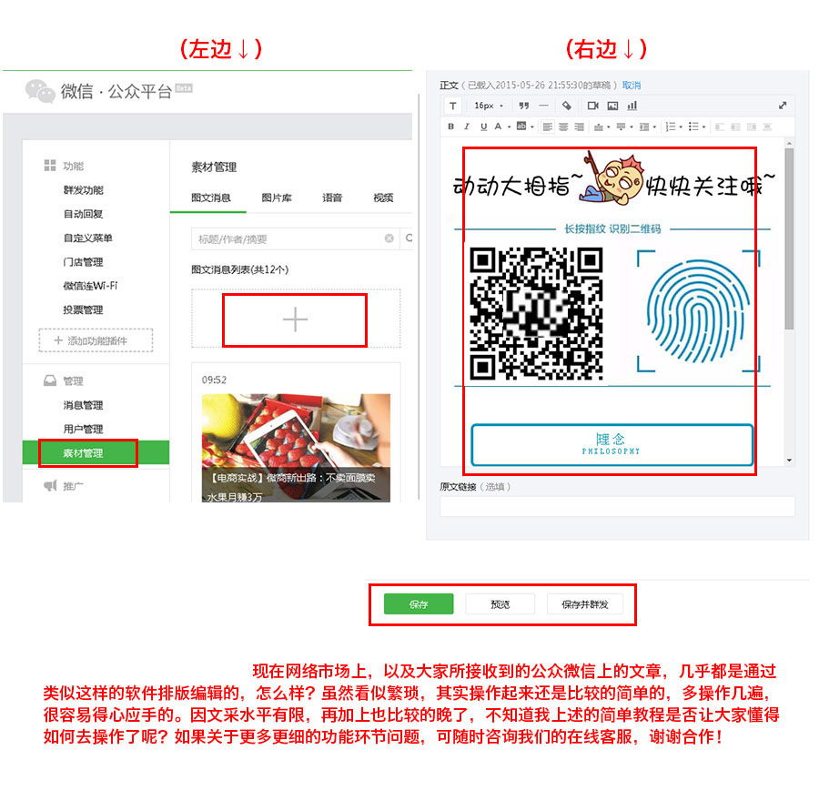
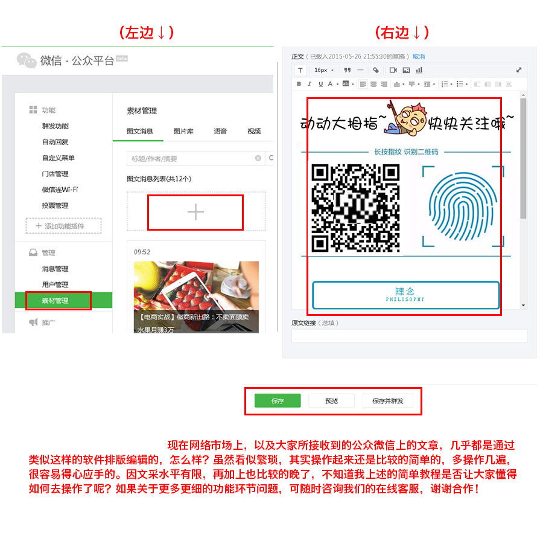

在线微信编辑器使用帮助指南
首先选中编辑器左边的样式点一下就会自动复制到右边，然后待所选样式进行排版编辑完成后，右击全选右边的（ctrl+a ctrl+c） 复制到公众平台（ctrl+v），就可以进行详细的制作了，公众平台里可以上传图片等素材了， 这个编辑器的目的就是能做出那些好看的样式！



首先选中编辑器左边的样式点一下就会自动复制到右边，然后待所选样式进行排版编辑完成后，右击全选右边的（ctrl+a ctrl+c） 复制到公众平台（ctrl+v），就可以进行详细的制作了，公众平台里可以上传图片等素材了， 这个编辑器的目的就是能做出那些好看的样式！
